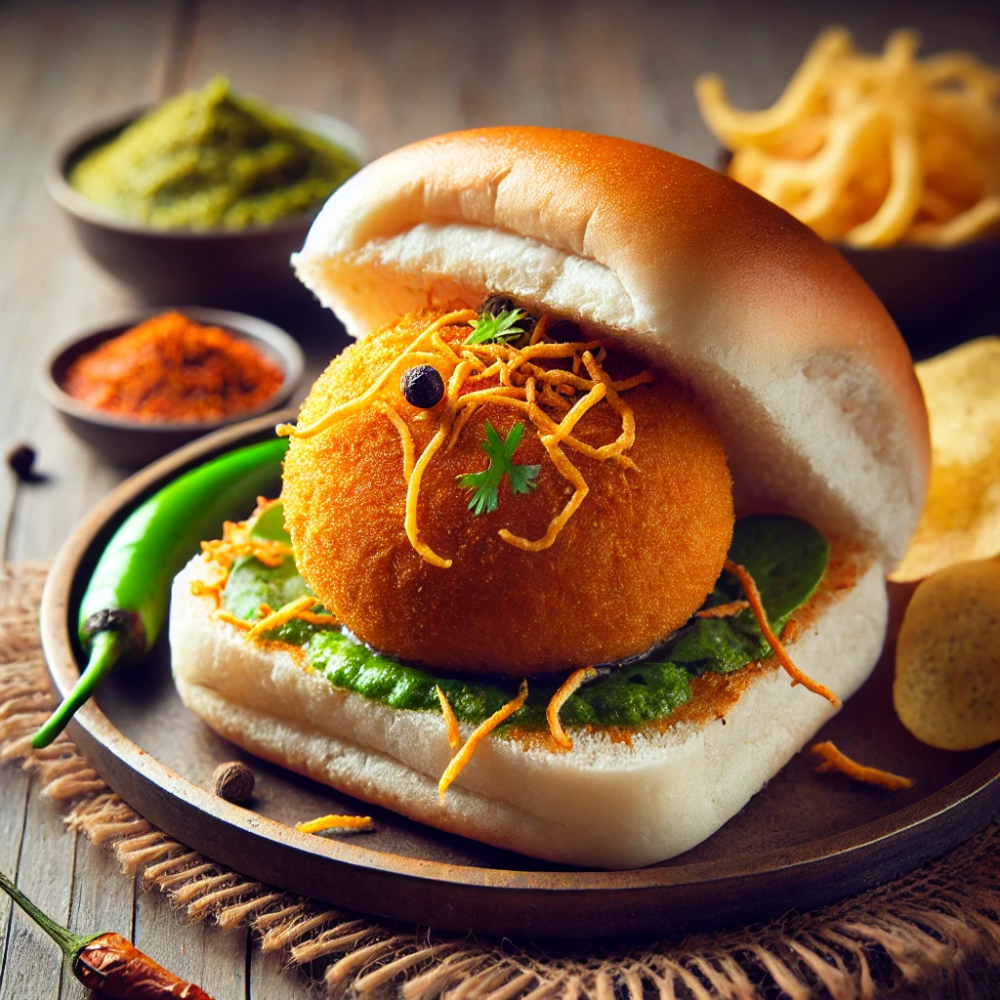

Vadapav

Description
Vada Pav, often referred to as the "Indian burger," is a popular street food from Mumbai, Maharashtra. It consists of a spicy potato fritter (vada) placed between soft bread buns (pav), slathered with flavorful chutneys like spicy green chutney and garlicky red chutney. The dish is served with fried green chilies and sometimes a side of crispy snacks. The combination of the crispy vada, soft pav, and tangy-spicy chutneys makes Vada Pav a perfect snack or a light meal, loved for its simplicity and bold flavors.
Ingredients:
For the Vada (Potato Fritter):
- 3 large potatoes (boiled and mashed)
- 1 tsp mustard seeds
- 1/2 tsp turmeric powder
- 1-2 green chilies (finely chopped)
- 1 tbsp ginger-garlic paste
- 10-12 curry leaves
- Salt to taste
- Oil for frying
For the Batter:
- 1 cup gram flour (besan)
- 1/2 tsp turmeric powder
- A pinch of baking soda
- Water (as needed)
- Salt to taste
For Serving:
- 6 pav (soft bread buns)
- Green chutney
- Dry garlic chutney
- Fried green chilies (optional)
Steps:
- Prepare the Potato Filling: Heat a little oil in a pan, add mustard seeds and let them splutter. Add curry leaves, green chilies, and ginger-garlic paste. Sauté until fragrant. Add turmeric and mashed potatoes, and mix well. Season with salt and let the mixture cool. Shape into small balls.
- Make the Batter: In a bowl, mix gram flour, turmeric, salt, and a pinch of baking soda. Add water gradually to form a smooth, thick batter.
- Fry the Vadas: Heat oil in a deep pan. Dip the potato balls into the batter, ensuring they are fully coated, and deep fry them until golden and crispy. Drain on a paper towel.
- Assemble the Vada Pav: Toast the pav buns lightly with butter on a hot pan. Spread green chutney and dry garlic chutney inside the pav.
- Serve: Place a hot vada inside each pav. Serve with fried green chilies and enjoy this delicious snack hot!